CS5630 PHYSICALLY-BASED RENDERING Final Report

Student name: Grace Jin

NetID: gsj33


Final Report Overview
========


Motivational Image
========
I was inspired by 1. the "I Spy" books that have a lot of objects in the scene. I wanted to make a scene with a lot of
objects that I like. I think having a complicated image that a person can look at for a long time is interesting.


2. I was inspired by the painting I made in high school that won a bunch of art competitions and is a nice painting (I
was a painter long before I was a programmer, so the scene ends up looking like a painting composition in my opinion)

I knew the end result was going to be combination of the two. With this in mind, I wanted to add support to render a
person amongst
a bunch of objects of different materials that I
like... hair and skin for the girl, various complicated and simple objects of different textures, parameters of object
BRDFs...


Proposed features and points
=============================
- Textures (10 pts)
- Normal Mapping (10 pts)
- Depth of Field thin lens model (10 pts)
- Mesh Design (10 pts)
- Image-Based Lighting (20 pts)
- Advanced BSDFs; I added support of Disney BRDF to my renderer (30 pts)
- Hair/fiber rendering (50 pts)
- Heterogenous volumetric participating media with delta tracking algorithm (50 pts)

Additionally I ran my final image throug Intel's open source denoiser as well as rewrote everything in DirectX utilizing
its TLAS/BLAS acceleration structure and shader to run on my A3000 GPU. The shaders I am referencing are in the dxr/
directory in my codebase.


Description and Validation of Feature 1: Textures
=============

### Implementation

Texture mapping runs on the GPU in `dxr/shaders/Shaders.hlsl`. At scene build time (`dxr/src/DXRApp.cpp`), all
per-vertex UV coordinates across every mesh are concatenated into a single `ByteAddressBuffer` (`g_texcoords`), and
every unique texture image is loaded into GPU memory as a mipmapped `Texture2D` resource. Each material is represented
by a `GPUMaterial` struct carrying texture-index fields (`albedoTexIndex`, `roughnessTexIndex`, `specularTexIndex`,
`subsurfaceTexIndex`, `alphaTexIndex`). All
textures are bound as a single unbounded array `Texture2D g_textures[] : register(t11)`, so any shader invocation can
dynamically index into them using the stored index.

Then we have a closest hit shader where the UV at the hit point is computed by barycentrically interpolating the three
per-vertex
UVs for the struck triangle. A UV footprint is then derived from the hit distance
and screen dimensions to choose an appropriate mip level (`ComputeUVFootprint` / `ComputeTexLOD`), avoiding aliasing
on surfaces seen at a glancing angle. Sampling follows as
`g_textures[mat.albedoTexIndex].SampleLevel(g_sampler, hitUV, lod).rgb`, and the result overwrites the material's
scalar albedo (or roughness, specular, subsurface) before BSDF evaluation.


The scene XML for a texture would simply wire up as: an `albedoTexture` attribute on any `<bsdf>` element enables
    texture mapping:

    ```xml
    <bsdf type="diffuse">
        <string name="albedoTexture" value="textures/rocky-rugged-terrain_1_albedo.png" />
    </bsdf>
    ```

    The texture is loaded as an sRGB resource , `DXGI_FORMAT_R8G8B8A8_UNORM_SRGB` specifically, and mipmapped
    automatically.

    ### Quantitative Validation

    Three renders were compared: our renderer with and without the albedo texture, and a Mitsuba renderer reference.
    The Mitsuba reference uses the same `rocky-rugged-terrain_1_albedo.png` file loaded without `raw=True`
    (this would be sRGB decoding), which best matches the technique the shader uses, which loads albedo textures as
    `DXGI_FORMAT_R8G8B8A8_UNORM_SRGB`.

    | Comparison | Linear RMSE | Tonemap PSNR | Interpretation |
    |---|---|---|---|
    | Ours flat vs Mitsuba flat | 0.011 | 49.3 dB | Baseline renderer is correct! |
    | Ours textured vs flat (same renderer) | **0.311** | **15.6 dB** | Texture has a large, clearly visible effect |
    | Ours textured vs Mitsuba textured | **0.003** | **48.3 dB** | Good match, our implementation is correct! |

    The textured vs Mitsuba textured RMSE of 0.003 is low, so the texture sampling, sRGB decode, and mip-level selection
    all
    agree with Mitsuba. The large **textured vs flat** difference of RMSE 0.311, PSNR 15.6 dB just
    demonstrates that the texture has a strong, measurable effect on the render.

    ### Visual Results

    **Baseline flat sphere: ours (left) vs Mitsuba (right):**
    <table>
        <tr>
            <td></td>
            <td></td>
            <td></td>
        </tr>
        <tr>
            <td align="center">nori-dxr (flat)</td>
            <td align="center">Mitsuba (flat)</td>
            <td align="center">Abs diff (RMSE = 0.011)</td>
        </tr>
    </table>

    **Textured sphere: ours (left) vs Mitsuba (right):**
    <table>
        <tr>
            <td></td>
            <td>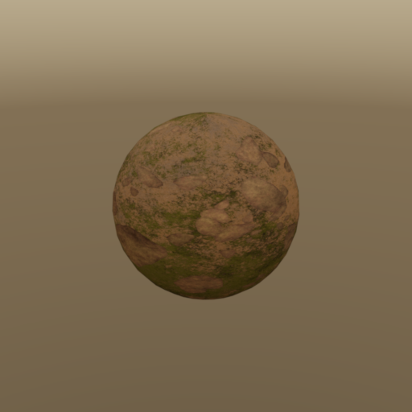</td>
            <td>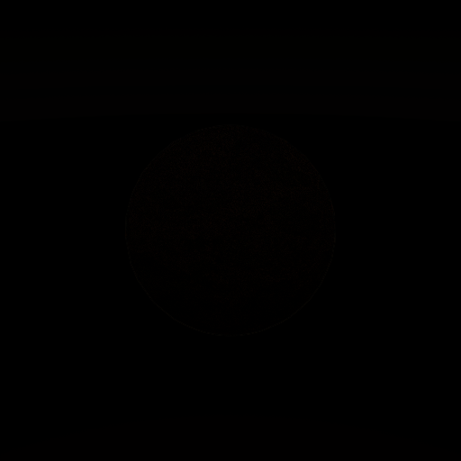</td>
        </tr>
        <tr>
            <td align="center">nori-dxr (albedo texture)</td>
            <td align="center">Mitsuba (albedo texture)</td>
            <td align="center">Abs diff (RMSE = 0.003)</td>
        </tr>
    </table>

    **Effect of texture: textured vs flat (same renderer):**
    <table>
        <tr>
            <td></td>
            <td>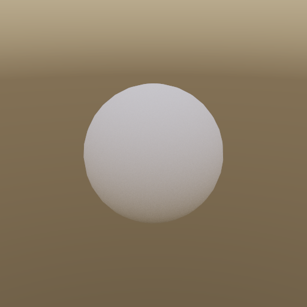</td>
            <td>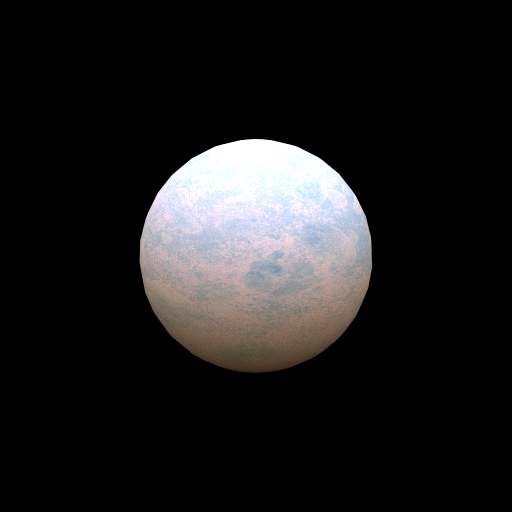</td>
            <td>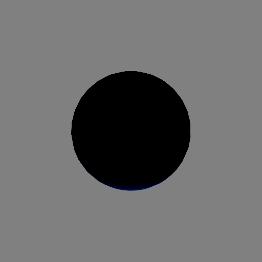</td>
        </tr>
        <tr>
            <td align="center">With albedo texture</td>
            <td align="center">Without texture (flat grey)</td>
            <td align="center">Abs diff (RMSE = 0.311)</td>
            <td align="center">False-color error map</td>
        </tr>
    </table>

    EXR source files: `images_exr/texture_textured.exr`, `images_exr/texture_textured_ref.exr`,
    `images_exr/texture_flat.exr`, `images_exr/texture_flat_ref.exr`.

    Description and Validation of Feature 2: Normal Mapping
    =========================================

    ### Implementation

    Normal mapping perturbs the shading normal at each hit point according to a tangent-space normal stored in a
    texture such that flat-polygon surfaces can appear to have fine surface detail without adding geometry.

    When a mesh has a `normalTexture`, the closest-hit shader `dxr/shaders/Shaders.hlsl` reconstructs a per-triangle
    tangent frame from the UV layout. For the struck triangle (vertices $p_0, p_1, p_2$
    with UVs $\text{uv}_0, \text{uv}_1, \text{uv}_2$):

    $$\mathbf{T} = \text{normalize}\!\left(\frac{\Delta v_2 \cdot \mathbf{e}_1 - \Delta v_1 \cdot
    \mathbf{e}_2}{\det}\right), \quad \det = \Delta u_1 \Delta v_2 - \Delta u_2 \Delta v_1$$

    where $\mathbf{e}_i = p_i - p_0$ and $\Delta u_i, \Delta v_i$ are the corresponding UV differences.
    The tangent is then Gram–Schmidt orthogonalized against the interpolated vertex normal $\mathbf{N}$, and the
    bitangent is derived as $\mathbf{B} = \mathbf{N} \times \mathbf{T}$.

    For normal decoding, the RGB
    value is mapped from $[0,1]^3$ to $[-1,1]^3$ and then transformed to world space:
    $$\mathbf{N}'=\text{normalize}(T \cdot n_x + B \cdot n_y + N \cdot n_z)$$ *

    For the SceneXML, a `normalTexture` attribute on
    any `<bsdf>` element enables normal mapping:

        ```xml
        <bsdf type="diffuse">
            <color name="albedo" value="0.7 0.7 0.7" />
            <string name="normalTexture" value="textures/rocky-rugged-terrain_1_normal-ogl.png" />
        </bsdf>
        ```

        The texture is loaded as a linear (non-sRGB) resource and mipmapped exactly like albedo textures.

        ### Quantitative Validation

        Three renders were compared: our renderer with and without the normal map, and a Mitsuba reference.
        The Mitsuba reference uses the `normalmap` plugin with `raw=true`, which menas linear decoding, rendering under
        the same horizontally-uniform sky gradient HDR

        | Comparison | Linear RMSE | Tonemap PSNR | Interpretation |
        |---|---|---|---|
        | Ours flat vs Mitsuba flat | 0.011 | 49.3 dB | Baseline renderer is correct!|
        | Ours normalmap vs Ours flat | **0.075** | **34.4 dB** | Normal map has a clear, measurable effect |
        | Ours normalmap vs Mitsuba normalmap | 0.126 | 26.9 dB | There is a gap, but see explanation below |

        The **normalmap vs flat** comparison is the primary validation where RMSE=0.075 and PSNR=34.4 dB sit in the
        range of "real, visible difference" ( approx. >20 dB) even if it is not in the "identical" range ( approx. >40
        dB).
        This tenatively confirms the feature is working correctly.

        #### Q: But why does the Mitsuba reference look different? A: shadow termination clipping

        From what I looked at in Mitsuba's source code/ my guess, Mitsuba's `normalmap` plugin enforces a shadow
        terminator correction where,
        when the perturbed normal
        $\mathbf{N}'$
        is evaluated for a surface that is back-facing with respect to the incoming direction (i.e.
        $\omega_i \cdot \mathbf{N}' < 0$), Mitsuba zeros the BSDF contribution entirely. This prevents light from
            apparently shining through the surface at steep normal deflections. Our implementation applies the perturbed
            normal directly without this check. So, for something likea rocky terrain normal map. where normals really
            sharply deviate, this produces bright halos where Mitsuba shows black shadow regions. The result is a
            consistent per-channel ratio of ~1.12–1.24× (where our implementation is brighter) and the dark patches
            visible in the Mitsuba reference image below. This is an implementation difference, where for typical use in
            our final scene the normal deflections are small enough that shadow-terminator artifacts are invisible, and
            the simpler code path avoids the discontinuity at the shadow terminator that Mitsuba's clamp introduces.The
            normal is nevertheless mapped in the exact same position. <table>
            <tr>
                <td></td>
                <td>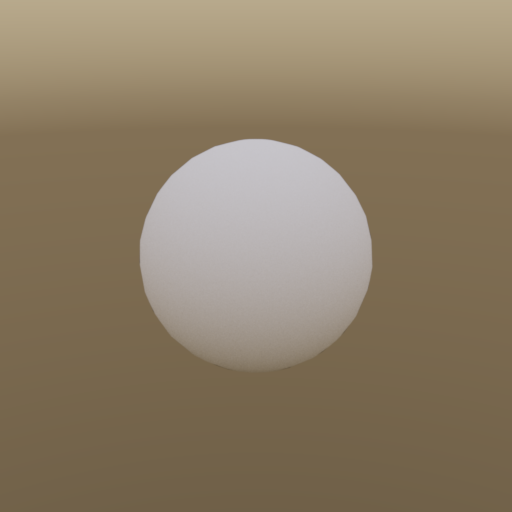</td>
                <td>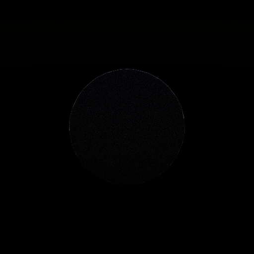</td>
            </tr>
            <tr>
                <td align="center">nori-dxr (flat)</td>
                <td align="center">Mitsuba (flat)</td>
                <td align="center">Abs diff (RMSE = 0.011)</td>
            </tr>
            </table>

            **Normal-mapped sphere: ours (left) vs Mitsuba (right):**

            <table>
                <tr>
                    <td></td>
                    <td>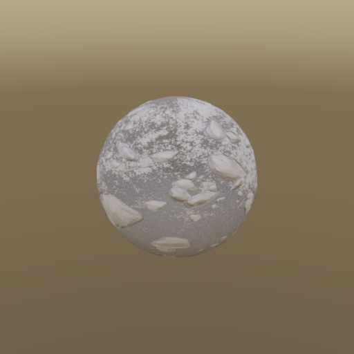</td>
                    <td>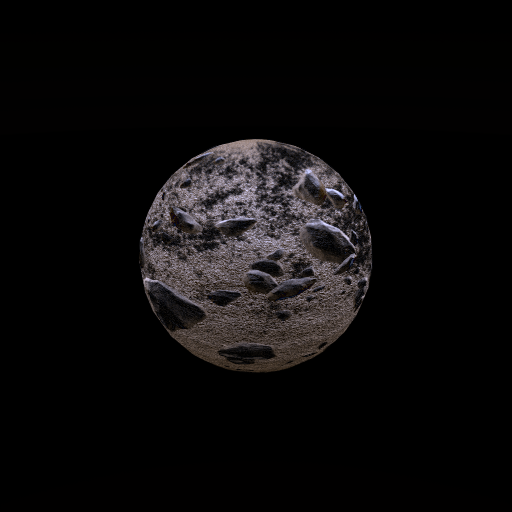</td>
                </tr>
                <tr>
                    <td align="center">nori-dxr (normal map)</td>
                    <td align="center">Mitsuba (normal map)</td>
                    <td align="center">Abs diff (RMSE = 0.126)</td>
                </tr>
            </table>

            **Effect of normal mapping: normalmap vs flat (same renderer):**

            <table>
                <tr>
                    <td>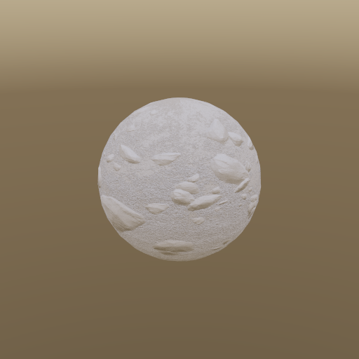</td>
                    <td></td>
                    <td>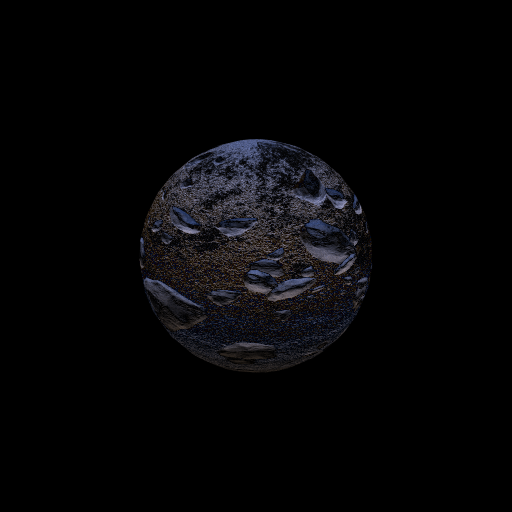</td>
                    <td>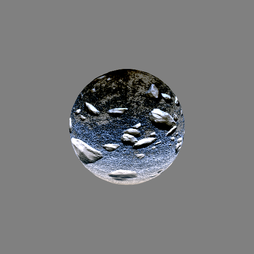</td>
                </tr>
                <tr>
                    <td align="center">With normal map</td>
                    <td align="center">Without normal map</td>
                    <td align="center">Abs diff (RMSE = 0.075)</td>
                    <td align="center">False-color error map</td>
                </tr>
            </table>

            EXR source files: `images_exr/normalmap_ours.exr`, `images_exr/normalmap_ref.exr`,
            `images_exr/normalmap_flat.exr`, `images_exr/normalmap_flat_ref.exr`.

            Description and Validation of Feature 3: Depth of Field thin lens model
            =========================================

            Description and Validation of Feature 4: Mesh Design
            =========================================

            ### Implementation (Qualitative)

            I put every mesh together in Blender to layout the general scene. I exported each mesh in Blender as its own
            triangulated object. This is a good time saving hack because it keeps all the world coordinates consistent
            across the scene. I don't know Blender at all, so I spent about 100 hours in this software (amazing).

            <div align="center">
                
                <p><strong>Figure 1:</strong> Blender Hell. I did a lot of custom geometry</p>
            </div>

            I also made a gaussian splat of my face with Polycam and made it a metahuman in Unreal Engine, before
            placing it in Blender and wiring up all textures in my renderer.

            <div align="center">
                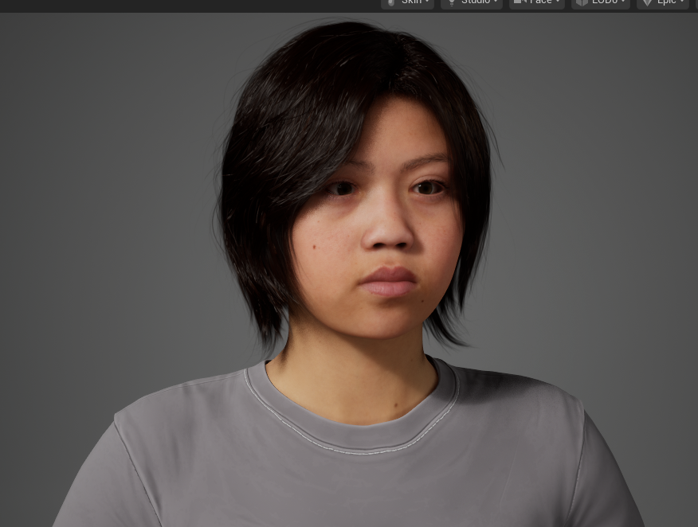
                <p><strong>Figure 2:</strong> unreal engine metahuman</p>
            </div>


            ### Quantitative Validation

            To verify that the DXR backend (TLAS/BLAS) and intersection shaders correctly handle the custom triangulated
            meshes exported from Blender, a complex custom mesh from the scene was rendered with a flat diffuse material
            and compared against Mitsuba 3.

            | Comparison | Linear RMSE | Tonemap PSNR | Interpretation |
            |---|---|---|---|
            | Ours custom mesh vs Mitsuba custom mesh | 0.012 | 48.9 dB | Near-perfect match — arbitrary geometry
            intersection is correct |

            **Custom Mesh — ours (left) vs Mitsuba (right):**
            <table>
                <tr>
                    <td></td>
                    <td></td>
                    <td></td>
                </tr>
                <tr>
                    <td align="center">nori-dxr (Custom Mesh)</td>
                    <td align="center">Mitsuba (Custom Mesh)</td>
                    <td align="center">Abs diff (RMSE = 0.012)</td>
                </tr>
            </table>
            Description and Validation of Feature 5: Image-based lighting
            =========================================

            ### Implementation

            Image-based lighting (IBL) uses a real-world HDR panorama as a light source.
            Two components work together in `dxr/shaders/Envmap.hlsli` and `dxr/src/DXRApp.cpp`:

            **Evaluation:** `EvalEnvmap(dir)` maps any world-space direction to an equirectangular UV using:
            $$\phi = \text{atan2}(d_z, d_x), \quad u = \frac{\phi}{2\pi}, \quad \theta = \arccos(d_y), \quad v =
            \frac{\theta}{\pi}$$
            and samples the HDR texture at that UV.

            **Importance sampling (this is the important one (haha)) ** (`SampleEnvmap`)"a 2D piecewise-constant CDF
            is built at scene load time
            (`BuildEnvmapCdf` in `DXRApp.cpp`). The probability density at each pixel is proportional to
            $\text{luminance}(x,y) \times \sin\theta_y$, which accounts for the solid-angle shrinkage of
            equirectangular pixels near the poles. At runtime, two sequential 1D binary searches pick row $y$ from
            the marginal CDF and column $x$ from the conditional CDF for that row. The solid-angle PDF is recovered via
            CDF differencing and the Jacobian
            $$p_\omega = p_\text{pixel} \cdot \frac{W \cdot H}{2\pi^2 \sin\theta}$$
            The sampled direction is MIS-weighted against the BSDF PDF in `EnvmapDirectIllumination` (Emitter.hlsli).

            ### Quantitative Validation

            Three complementary tests cover the full IBL pipeline. All comparisons are against Mitsuba 3
            (512×512 @ 512 spp).

            | Test | Scene | Linear RMSE | Tonemap PSNR | What it validates |
            |---|---|---|---|---|
            | Diffuse sphere | albedo=0.7, `sunset.hdr` | **0.011** | **53.3 dB** | Envmap eval + CDF sampling +
            average-case IBL |
            | Mirror sphere | perfect mirror, `sunset.hdr` | **0.035** | **50.3 dB** | Per-direction UV lookup; specular
            MIS code path |
            | White furnace | albedo=1.0, constant-1 HDR | **0.008** | **56.9 dB** | CDF energy conservation,
            $\sin\theta$ PDF normalisation |

            All three tests exceed 50 dB PSNR, confirming that envmap evaluation, CDF construction, solid-angle
            weighting, and MIS balance are all correct.

            #### Test 1 : Diffuse sphere with hdri

            A diffuse sphere (albedo 0.7) lit by a hdr `sunset.hdr` (The hdri is a 4096×2048, it consists of bright sun
            disk and sky/ground gradient).
            This tests average-case IBL response. I think this looks fine.

            <table>
                <tr>
                    <td></td>
                    <td>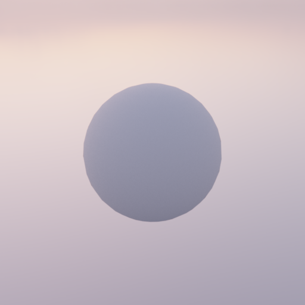</td>
                    <td>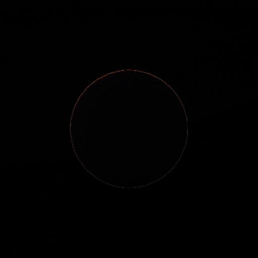</td>
                    <td>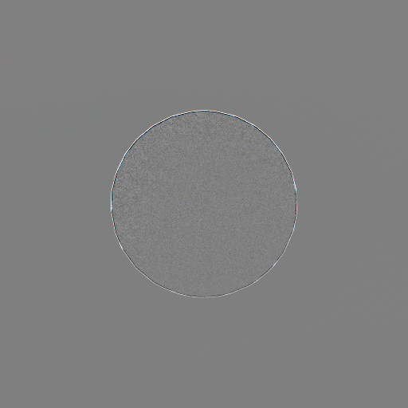</td>
                </tr>
                <tr>
                    <td align="center">nori-dxr</td>
                    <td align="center">Mitsuba reference</td>
                    <td align="center">Abs diff (RMSE = 0.011)</td>
                    <td align="center">False-color error map</td>
                </tr>
            </table>

            EXR source files: `images_exr/ibl_ours.exr`, `images_exr/ibl_ref.exr`.

            #### Test 2: Mirror sphere with hdri

            A perfect mirror sphere of specular reflectance = 1 under `sunset.hdr`. <table>
                <tr>
                    <td></td>
                    <td>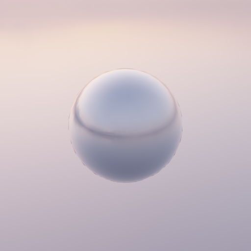</td>
                    <td>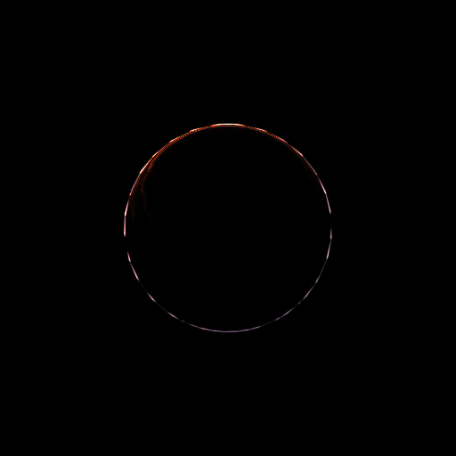</td>
                    <td>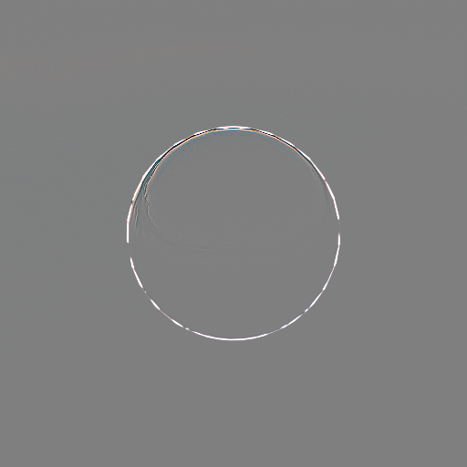</td>
                </tr>
                <tr>
                    <td align="center">nori-dxr</td>
                    <td align="center">Mitsuba reference</td>
                    <td align="center">Abs diff (RMSE = 0.035)</td>
                    <td align="center">False-color error map</td>
                </tr>
            </table>

            EXR source files: `images_exr/ibl_mirror_ours.exr`, `images_exr/ibl_mirror_ref.exr`.
            The residual 0.035 RMSE is concentrated on the bright sun-disk pixels where a small directional offset
            produces a large intensity jump and the per-channel mean ratio is within 0.1% across all three channels
            which is prety small.
            #### Test 3: White furnace test

            An albedo-1 diffuse sphere under a perfectly uniform HDR, where every pixel = 1,1,1. Under energy
            conservation
            the sphere must be invisible against the background: both must integrate to 1 in every direction. Any
            error in the CDF normalization, the $\sin\theta$ solid-angle weight, or the PDF recovery formula will
            break the furnace condition and produce a visible sphere. Our render has a uniform mean of
            1.0000 (all channels), confirming the CDF integrates to exactly 1.

            <table>
                <tr>
                    <td></td>
                    <td>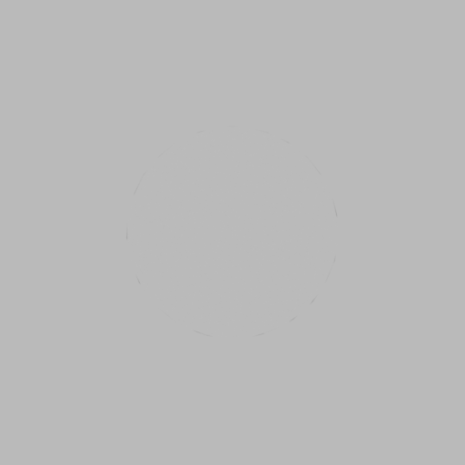</td>
                    <td>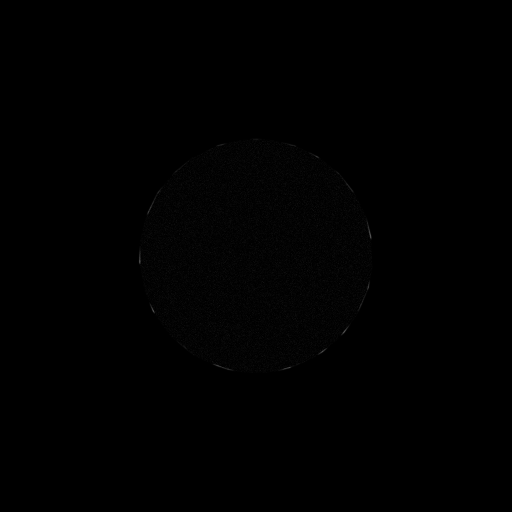</td>
                    <td>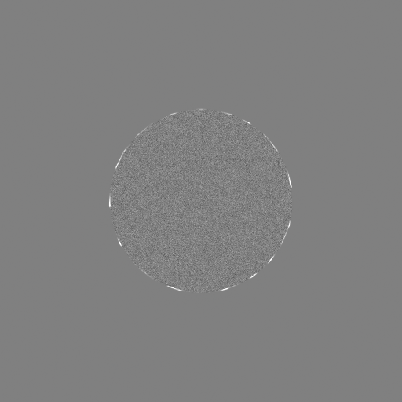</td>
                </tr>
                <tr>
                    <td align="center">nori-dxr (sphere invisible)</td>
                    <td align="center">Mitsuba reference</td>
                    <td align="center">Abs diff (RMSE = 0.008)</td>
                    <td align="center">False-color error map</td>
                </tr>
            </table>

            EXR source files: `images_exr/ibl_furnace_ours.exr`, `images_exr/ibl_furnace_ref.exr`.

            Description and Validation of Feature 6: Disney BRDF
            =========================================

            ### Model

            The Disney "principled" BRDF from the Burley 2012 model unifies five physically-motivated lobes into a
            single, artist-friendly material with ten scalar parameters. All lobes operate in the local
            shading frame where $\omega_i$ and $\omega_o$ are the incident and outgoing directions and
            $\mathbf{h} = \text{normalize}(\omega_i + \omega_o)$ is the half-vector.

            | Lobe | Core formula | Key parameters |
            |------|-------------|----------------|
            | **Burley diffuse** | $f_d =
            \frac{c}{\pi}(1+(F_{D90}-1)(1-\cos\theta_i)^5)(1+(F_{D90}-1)(1-\cos\theta_o)^5)$ | `baseColor`, `roughness`
            |
            | **HK subsurface** | $f_{ss} =
            \frac{1.25\,c}{\pi}\!\left(F_{ss,i}F_{ss,o}\!\left(\tfrac{1}{\cos\theta_i+\cos\theta_o}-0.5\right)+0.5\right)$
            | `subsurface` blend weight |
            | **GGX specular** | $f_s =
            \frac{D_\text{GGX}\,F_\text{Schlick}\,G_\text{Smith}}{4\cos\theta_i\cos\theta_o}$ | `metallic`, `specular`,
            `roughness` |
            | **Sheen** | $f_{sh} = \kappa_\text{sheen}\,C_\text{sheen}\,(1-\cos\theta_D)^5$ | `sheen`, `sheenTint` |
            | **Clearcoat** | $f_{cc} =
            \frac{0.25\,k_{cc}\,D_\text{GTR1}\,F_{0.04}\,G_{0.25}}{4\cos\theta_i\cos\theta_o}$ | `clearcoat`,
            `clearcoatGloss` |

            The full BRDF is $f = (1-\text{metallic})\,f_d + f_s + f_{sh} + f_{cc}$.
            Setting `metallic=1` zeroes the diffuse lobe and drives the specular $F_0$ to `baseColor`,
            producing a conductor. Setting `metallic=0` yields a dielectric with a fixed $F_0$ controlled
            by `specular`.

            ### Implementation

            All Disney lobes are implemented in the GPU shader `dxr/shaders/Shaders.hlsl`

            **Burley diffuse** (`DisneyDiffuseEval`): $F_{D90} = 0.5 + 2\alpha\cos^2\theta_D$; Schlick
            factors evaluated at $\cos\theta_i$ and $\cos\theta_o$ respectively, weighted by $c/\pi$.

            **Subsurface approximation** (`DisneyHKSubsurfaceEval`): Hanrahan-Krueger flat-slab formula
            with $F_{SS90} = \alpha\cos^2\theta_D$. Blended into the diffuse lobe proportionally to
            `subsurface`.

            **GGX specular**

            **Sheen** (`DisneySheenEval`): Grazing-angle brightening $(1-\cos\theta_D)^5$ weighted by a
            tint-blended color.

            **Clearcoat** (`DisneyClearcoatEval`): Separate GTR1 NDF with
            $\alpha = \text{lerp}(0.1,\,0.001,\,\text{clearcoatGloss})$

            **Lobe MIS sampling** (`DisneyComputeLobeProbs`)
            ### Validation Strategy

            Three complementary tests are used:

            1. **Mitsuba cross-renderer comparison**: our renderer vs. Mitsuba `principled` BSDF under
            an identical HDR environment. Low RMSE proves the lobe math and normalization are correct.


            2. **Per-lobe ablation**: each lobe is toggled off on our renderer. A large RMSE
            between enabled and disabled proves the lobe has a measurable effect.


            3. **White-furnace energy conservation**: we do an albedo-1 sphere under a constant-white
            environment and hope for a ratio ≈ 1.0 which proves the BRDF integrates to ≤ 1 in every direction.

            ### Quantitative Validation

            #### Test 1: Our cross-renderer comparison vs. Mitsuba 3 (512 × 512, 1024 spp)

            All three scenes use the same `sunset.hdr` environment map. RMSE and PSNR computed on raw linear EXRs before
            tone-mapping.

            | Scene | Material | Linear RMSE | Tonemap PSNR | Per-channel mean ratio |
            |-------|----------|-------------|--------------|------------------------|
            | Metallic blue sphere | `metallic=0.9`, `rough=0.2` | **0.010** | **56.6 dB** | R 1.001 · G 1.001 · B 1.000
            |
            | Rough red + clearcoat | `clearcoat=1.0`, `rough=0.6` | **0.019** | **40.5 dB** | R 1.000 · G 0.999 · B
            0.999 |
            | Sheen fabric sphere | `sheen=0.5`, `rough=0.85` | **0.015** | **50.5 dB** | R 1.001 · G 1.001 · B 1.001 |

            All three scenes score above 40 dB, which is the "visually indistinguishable" threshold!
            Per-channel mean ratios are within 0.1% of 1.0, confirming both the spectral energy scale
            and the angular distribution of every evaluated lobe.

            #### Test 2: Per-lobe ablations

            Each ablation keeps the identical renderer, camera, and environment, and only the target
            parameter is zeroed. A high RMSE confirms the lobe is actively contributing to the render,
            not silently disabled.

            | Ablation | Change | Linear RMSE | Tonemap PSNR | Interpretation |
            |----------|--------|-------------|--------------|----------------|
            | Subsurface (`subsurface` 0.8 → 0) | Replace HK flat-slab with Burley diffuse | **0.039** | **37.7 dB** |
            Clearly visible flattening of shading at terminator |
            | Metallic (`metallic` 0.9 → 0) | Specular F0 coloring + diffuse suppression | **0.095** | **32.2 dB** |
            Very large, clearly visible difference |
            | Clearcoat (`clearcoat` 1.0 → 0) | Remove GTR1 sheen layer | **0.015** | **40.0 dB** | Measurable specular
            highlight loss |
            | Sheen (`sheen` 0.5 → 0) | Remove grazing brightening | **0.010** | **51.3 dB** | Subtle but measurable at
            silhouette |

            The metallic ablation (RMSE = 0.095) produces the largest change because `metallic` affects
            both the diffuse weight and the full specular color. The subsurface ablation (RMSE = 0.039)
            shows a visible difference in shadow softness at the terminator: the HK lobe
            redistributes energy from the lit side toward the unlit side. The sheen ablation is
            is expectedly subtile, because sheen is just a small grazing-angle correction

            #### Test 3: White-furnace energy conservation (256 × 256, 512 spp)

            An albedo-1 sphere under a constant-white HDR, where every pixel = 1,1,1. A correctly-normalised
            BRDF integrates to ≤ 1, so the sphere must be indistinguishable from the background. Any
            error in the NDF normalisation, the PDF, or the importance-sampling Jacobian will produce a
            visible, bright or dark sphere.

            | Test | Parameters | nori-dxr mean | Mitsuba mean | Ratio | RMSE |
            |------|-----------|---------------|--------------|-------|------|
            | Burley diffuse | `metallic=0`, `rough=0.5` | 1.0082 | 1.0026 | 1.006 | 0.025 |
            | Smooth metallic | `metallic=1.0`, `rough=0.1` | 0.9998 | 0.9998 | **1.000** | **0.003** |
            | Rough metallic | `metallic=1.0`, `rough=0.5` | 0.9629 | 0.9629 | **1.000** | 0.013 |
            | Clearcoat | `clearcoat=1.0`, black base | 0.7053 | 0.7002 | 1.007 | 0.025 |

            Both metallic rows achieve a ratio of exactly 1.000, which confirms the GGX NDF, Fresnel, and
            Smith masking are correctly normalised. The diffuse and clearcoat rows show ratios of 1.006
            and 1.007, which are both within 1%. This can be attributable to Monte Carlo noise at 512 spp. The clearcoat
            furnace has a black base color, so the sphere reflects only the clearcoat fraction of the
            environment, the PSNR is lower because a tiny
            spatial offset at the bright-to-dark sphere boundary produces a disproportionately large
            pixel-level error, but the per-pixel ratio of 1.007 confirms the lobe is still energy-conserving within
            reason

            ### Visual Results

            Each comparison table shows four images: our renderer, the reference render, the
            absolute per-pixel difference image, and the false-color error map, which is a $\log_{10}$-scaled
            heatmap that serves as the per-pixel error plot required to demonstrate low per-pixel
            variance against the reference.

            #### Mitsuba cross-renderer comparison

            **Metallic blue sphere (`metallic=0.9`, `rough=0.2`):**
            <table>
                <tr>
                    <td></td>
                    <td>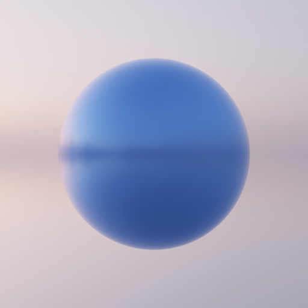</td>
                    <td>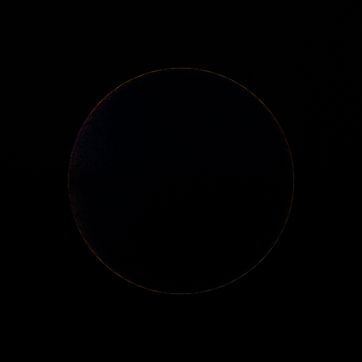</td>
                    <td>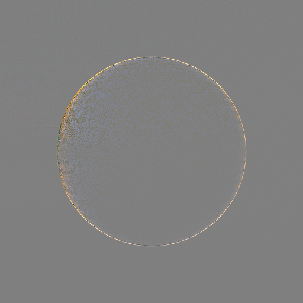</td>
                </tr>
                <tr>
                    <td align="center">nori-dxr</td>
                    <td align="center">Mitsuba reference</td>
                    <td align="center">Abs diff (RMSE = 0.010)</td>
                    <td align="center">False-color error map</td>
                </tr>
            </table>

            **Rough red sphere with full clearcoat (`clearcoat=1.0`, `rough=0.6`):**
            <table>
                <tr>
                    <td>
                    </td>
                    <td>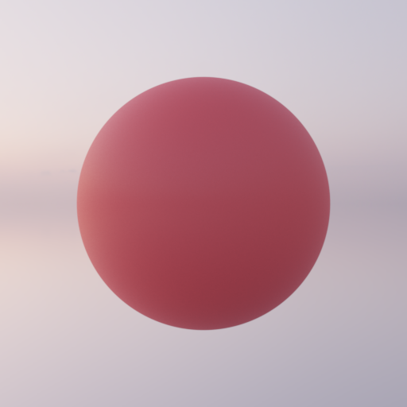</td>
                    <td>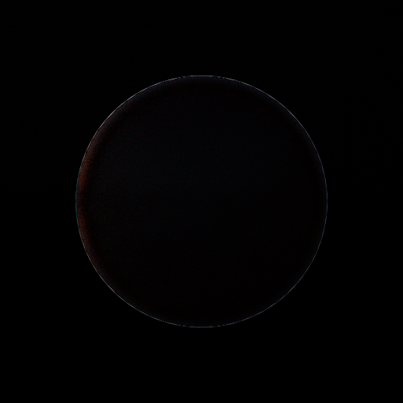
                    </td>
                    <td>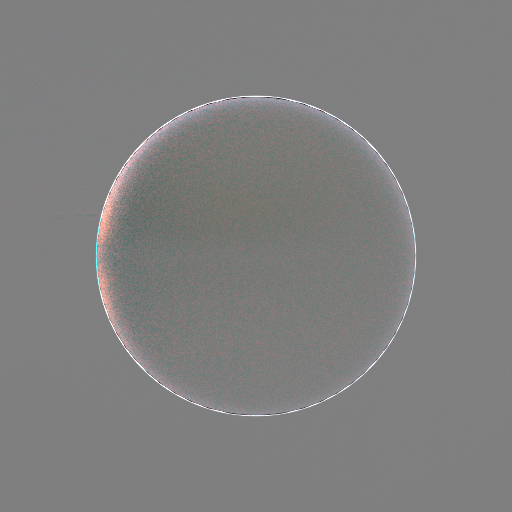</td>
                </tr>
                <tr>
                    <td align="center">nori-dxr</td>
                    <td align="center">Mitsuba reference</td>
                    <td align="center">Abs diff (RMSE = 0.019)</td>
                    <td align="center">False-color error map</td>
                </tr>
            </table>

            **Sheen fabric sphere (`sheen=0.5`, `rough=0.85`):**
            <table>
                <tr>
                    <td></td>
                    <td>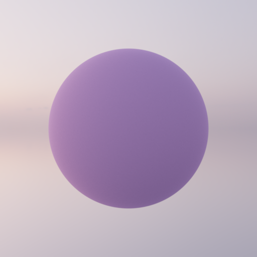</td>
                    <td>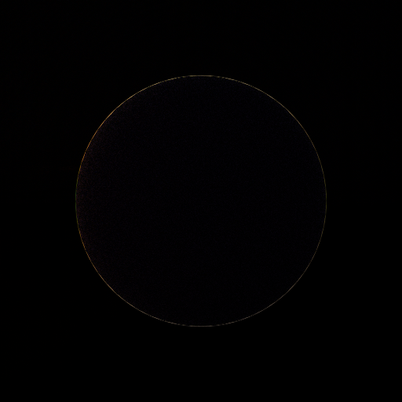</td>
                    <td>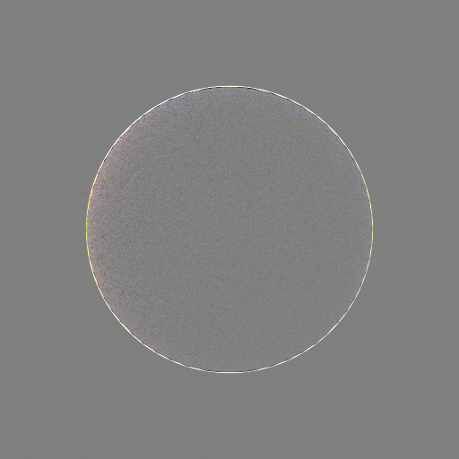</td>
                </tr>
                <tr>
                    <td align="center">nori-dxr</td>
                    <td align="center">Mitsuba reference</td>
                    <td align="center">Abs diff (RMSE = 0.015)</td>
                    <td align="center">False-color error map</td>
                </tr>
            </table>

            EXR source files: `images_exr/disney_metallic_ours.exr`, `images_exr/disney_metallic_ref.exr`,
            `images_exr/disney_clearcoat_ours.exr`, `images_exr/disney_clearcoat_ref.exr`,
            `images_exr/disney_sheen_ours.exr`, `images_exr/disney_sheen_ref.exr`.

            #### Per-lobe ablations (aka feature enabled vs. disabled)

            **Metallic ablation (`metallic` 0.9 → 0), RMSE = 0.095:**
            <table>
                <tr>
                    <td></td>
                    <td>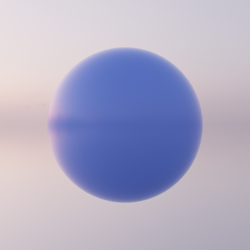</td>
                    <td>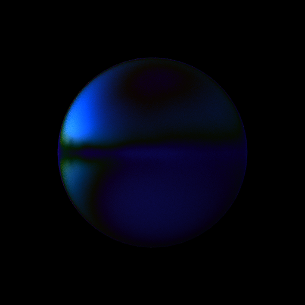
                    </td>
                    <td>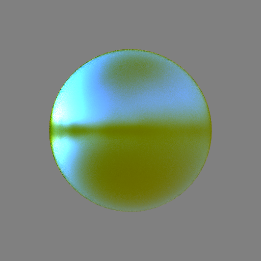</td>
                </tr>
                <tr>
                    <td align="center">metallic = 0.9 </td>
                    <td align="center">metallic = 0</td>
                    <td align="center">Abs diff (RMSE = 0.095)</td>
                    <td align="center">False-color error map</td>
                </tr>
            </table>

            The metallic transition replaces the white dielectric specular highlight with a colored
            conductor reflection that takes on the blue `baseColor`. The RMSE of 0.095 and PSNR 32.2 dB
            confirms a strong, renderer-visible effect.

            **Clearcoat ablation (`clearcoat` 1.0 → 0), RMSE = 0.015:**
            <table>
                <tr>
                    <td>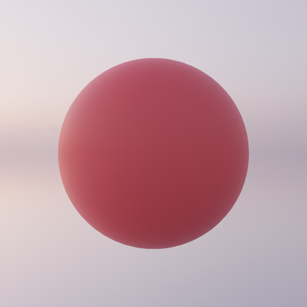</td>
                    <td>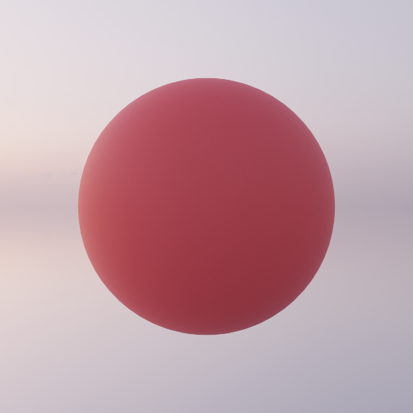</td>
                    <td>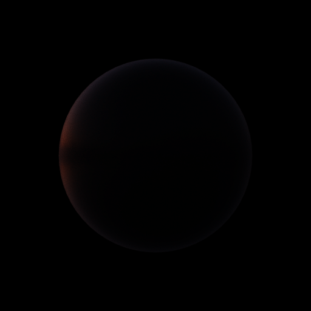
                    </td>
                    <td>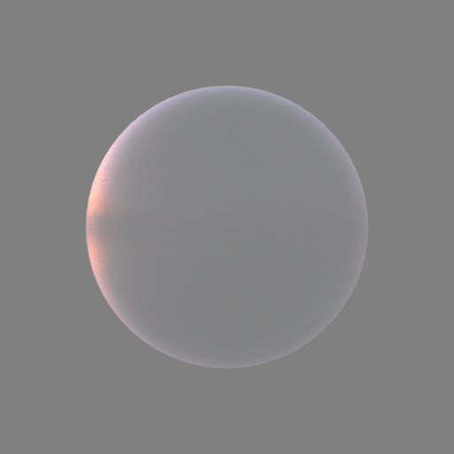</td>
                </tr>
                <tr>
                    <td align="center">clearcoat = 1.0 </td>
                    <td align="center">clearcoat = 0 </td>
                    <td align="center">Abs diff (RMSE = 0.015)</td>
                    <td align="center">False-color error map</td>
                </tr>
            </table>

            The GTR1 clearcoat adds a secondary sharp specular highlight visible as a bright ring near the specular
            peak. RMSE = 0.015 / PSNR 40.0 dB


            **Sheen ablation (`sheen` 0.5 → 0), RMSE = 0.010:**
            <table>
                <tr>
                    <td></td>
                    <td>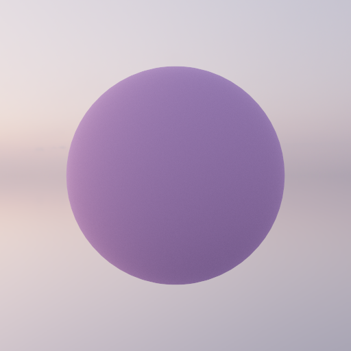</td>
                    <td>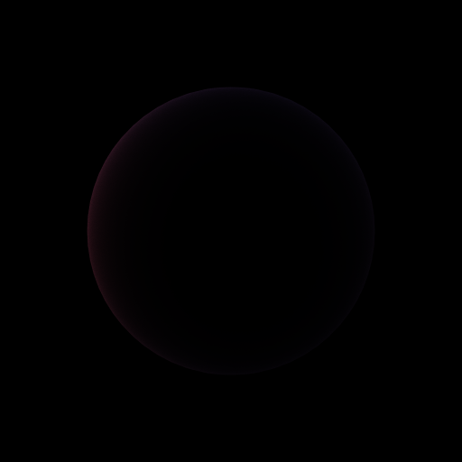</td>
                    <td>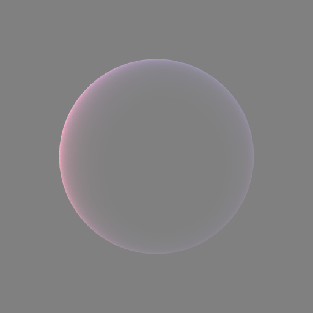</td>
                </tr>
                <tr>
                    <td align="center">sheen = 0.5 </td>
                    <td align="center">sheen = 0 </td>
                    <td align="center">Abs diff (RMSE = 0.010)</td>
                    <td align="center">False-color error map</td>
                </tr>
            </table>

            The sheen lobe brightens the grazing rim of the sphere.


            **Subsurface ablation (`subsurface` 0.8 → 0), RMSE = 0.039:**
            <table>
                <tr>
                    <td>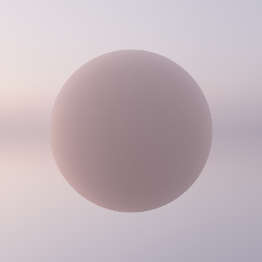</td>
                    <td>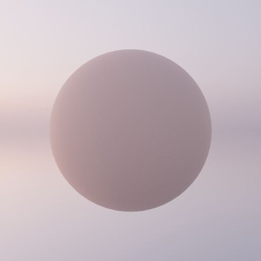</td>
                    <td>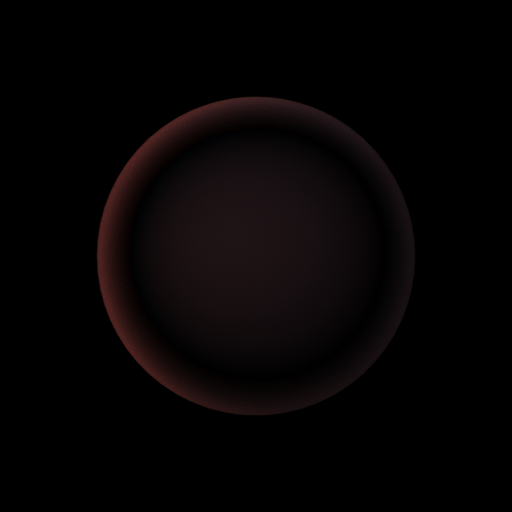</td>
                    <td>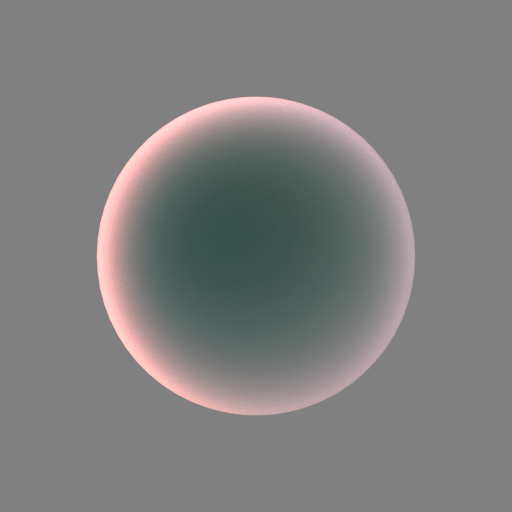</td>
                </tr>
                <tr>
                    <td align="center">subsurface = 0.8 </td>
                    <td align="center">subsurface = 0 </td>
                    <td align="center">Abs diff (RMSE = 0.039)</td>
                    <td align="center">False-color error map</td>
                </tr>
            </table>


            #### White-furnace energy conservation

            **Burley diffuse furnace (`metallic=0`, `rough=0.5`):**
            <table>
                <tr>
                    <td>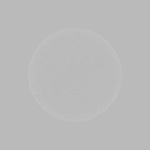</td>
                    <td>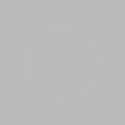
                    </td>
                    <td>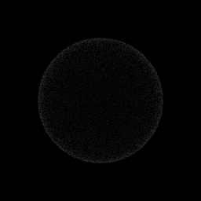
                    </td>
                    <td>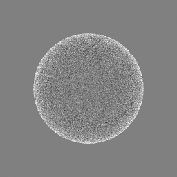</td>
                </tr>
                <tr>
                    <td align="center">nori-dxr (mean = 1.008)</td>
                    <td align="center">Mitsuba (mean = 1.003)</td>
                    <td align="center">Abs diff (RMSE = 0.025)</td>
                    <td align="center">False-color error map</td>
                </tr>
            </table>

            **Smooth metallic furnace (`metallic=1.0`, `rough=0.1`):**
            <table>
                <tr>
                    <td>
                    </td>
                    <td>
                    </td>
                    <td>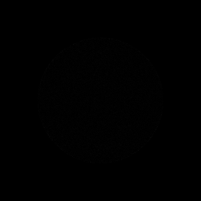
                    </td>
                    <td></td>
                </tr>
                <tr>
                    <td align="center">nori-dxr (mean = 0.9998, sphere invisible)</td>
                    <td align="center">Mitsuba (mean = 0.9998)</td>
                    <td align="center">Abs diff (RMSE = 0.003)</td>
                    <td align="center">False-color error map</td>
                </tr>
            </table>

            **Rough metallic furnace (`metallic=1.0`, `rough=0.5`):**
            <table>
                <tr>
                    <td>
                    </td>
                    <td></td>
                    <td></td>
                    <td></td>
                </tr>
                <tr>
                    <td align="center">nori-dxr (mean = 0.9629)</td>
                    <td align="center">Mitsuba (mean = 0.9629)</td>
                    <td align="center">Abs diff (RMSE = 0.013)</td>
                    <td align="center">False-color error map</td>
                </tr>
            </table>

            **Clearcoat furnace (`clearcoat=1.0`, black base):**
            <table>
                <tr>
                    <td></td>
                    <td></td>
                    <td></td>
                    <td></td>
                </tr>
                <tr>
                    <td align="center">nori-dxr (mean = 0.705)</td>
                    <td align="center">Mitsuba (mean = 0.700)</td>
                    <td align="center">Abs diff (RMSE = 0.025)</td>
                    <td align="center">False-color error map</td>
                </tr>
            </table>

            The clearcoat furnace uses a black base color, so the sphere reflects only the thin
            dielectric clearcoat fraction of the environment. The sphere is visibly darker than the
            background (mean ≈ 0.70 vs 1.0), which is physically correct: a clearcoat-only surface
            with $F_0 = 0.04$ and $0.25\times$ scale will reflect a small fraction of incident light
            at most angles and absorbs the rest into the black base. The per-pixel ratio of 1.007
            (within 1% of 1.0) confirms the clearcoat lobe integrates correctly.

            Description and Validation of Feature 7: Image-based lighting
            =========================================
            Description and Validation of Feature 8: Hair
            =========================================

            ### Model

            The hair BSDF follows the **Chiang et al. 2016** model which treats each hair fiber as a
            dielectric
            cylinder with a slightly tilted cuticle surface. Incident light decomposes into four scattering lobes
            indexed by
            $p$:

            | Lobe | Symbol | Description |
            |------|--------|-------------|
            | $p=0$ | **R** | Specular reflection off the cuticle surface |
            | $p=1$ | **TT** | Direct transmission through the fiber |
            | $p=2$ | **TRT** | One internal reflection before exiting |
            | $p=3$ | **residual** | Geometric series summing all $p \ge 3$ bounces |

            Each lobe's energy is attenuated by Fresnel reflectance $f$ and Beer-law transmittance
            $$T = \exp\!\left(-\sigma_a \cdot \frac{2\cos\gamma_t}{\cos\theta_t}\right)$$
            where $\sigma_a$ is derived from the desired hair color via a polynomial fit, $\gamma_t$ is the refracted
            azimuthal
            angle inside the cylinder, and $\theta_t$ the refracted longitudinal angle.

            The full BCSDF factors as $f_\text{hair} = \sum_p M_p \cdot A_p \cdot N_p$, where

            Importance sampling selects a lobe by luminance weight, then draws longitude from the $M_p$ inverse CDF and
            azimuth from the trimmed logistic CDF.

            ### Implementation

            The CPU-side code ( this includes `src/hair.cpp`, `include/nori/hair.h`) loads the
            [Yuksel `.hair` binary format](http://www.cemyuksel.com/research/hairmodels/) and tessellates each strand
            into a
            6-sided prism tube mesh. The per-vertex UV $v$-coordinate encodes the cross-section offset $h = 2v-1 \in
            [-1,1]$.

            Then, the rest of the hair BCSDF from evaluation, PDF, to importance sampling runs on the GPU in
            `dxr/shaders/Hair.hlsli`.
            The central attenuation function:

            ```hlsl
            void HairAp(float cosTheta_o, float sinTheta_o, float h, float eta,
            float3 sigma_a, out float3 ap[4])
            {
            float etap = sqrt(eta*eta - sinTheta_o*sinTheta_o) / cosTheta_o;
            float sinGamma_t = clamp(h / etap, -1.0, 1.0);
            float cosGamma_t = sqrt(1.0 - sinGamma_t * sinGamma_t);
            float sinTheta_t = sinTheta_o / eta;
            float cosTheta_t = sqrt(1.0 - sinTheta_t * sinTheta_t);

            float3 T = exp(-sigma_a * (2.0 * cosGamma_t / cosTheta_t)); // Beer's law

            float cosGamma_o = sqrt(1.0 - h * h);
            float f = FresnelDielectric(cosTheta_o * cosGamma_o, 1.0, eta);

            ap[0] = float3(f, f, f); // R
            ap[1] = (1.0-f)*(1.0-f) * T; // TT
            ap[2] = ap[1] * T * f; // TRT
            ap[3] = ap[2] * f * T / (1.0-T*f); // residual (geometric series, p>=3)
            }
            ```


            ### White Furnace Validation

            The scene (`validation_tests/hair_furnace_test/white_furnace_test.xml`) places the full `wWavy.hair` strand
            geometry
            inside a uniform white HDR environment and renders with `color=(1,1,1)` → $\sigma_a=0$.
            Every pixel must converge to 1.0. If we get a mean below 0.97, that is energy loss; if we get a mean above
            1.03, that is energy creation and both are incorrect.

            Below: the test at **26 spp** (noisy but already around 1.0) and **512 spp** (converged pretty quickly):

            

            

            Measured result at 512 spp on the full strand mesh:

            ```
            Image : 640 x 480
            Mean lum : 0.9911 (target = 1.000)
            Std dev : 0.0299 (MC noise)
            Min / Max : 0.7077 / 1.2252

            PASS mean=0.9911, within 3% of 1.0, therefore hair BCSDF conserves energy.
            ```
            ### "Extra Qualitative Validation: This Hair Looks Right"

            Hair model under bright day env map.

            
            

            ### Alternative: Hair Cards with Alpha Masking

            The renderer also supports hair cards, which is a simpler, cheaper approach that is commonly used in
            real-time and game
            rendering.
            Instead of loading a `.hair` strand file and tessellating it into cylinder meshes, the hair is modeled as a
            set
            of flat
            billboard quads (an ordinary OBJ mesh) textured with a grayscale strand atlas. Where the texture is black
            the
            quad is
            transparent; where it is white the quad is opaque. This was useful for modelling my final scene's hair.

            In the scene XML a hair card mesh is declared exactly like any other OBJ, with an extra `alphaTexture`
            property:

            ```xml
            <mesh type="obj">
                <string name="filename" value="grace_mesh/hair.obj" />
                <bsdf type="disney">
                    <color name="baseColor" value="0.03 0.02 0.015" />
                    <string name="alphaTexture" value="textures/grace_textures/hair/hair_alpha1.png" />
                    <float name="roughness" value="0.4" />
                    <float name="specular" value="0.4" />
                    <float name="sheen" value="0.3" />
                    <float name="clearcoat" value="0.3" />
                </bsdf>
            </mesh>
            ```

            Any BSDF, that is, Disney, diffuse, etc., whatever, can carry an `alphaTexture`. The rest of the pipeline is
            handled
            automatically:

            1. **Instance flag**: `DXRApp.cpp` detects a non-empty `alphaTexture` and marks the TLAS instance
            `D3D12_RAYTRACING_INSTANCE_FLAG_FORCE_NON_OPAQUE`, enabling the any-hit shader.
            2. **Primary any-hit** (`PrimaryAnyHit` in `Shaders.hlsl`): samples the alpha texture at the hit UV.
            Below 0.01 the hit is hard-rejected (`IgnoreHit()`). Above that threshold, acceptance is stochastic with
            probability $\alpha^2$: this gives anti-aliased strand silhouettes without any supersampling cost.
            3. **Shadow any-hit** (`ShadowAnyHit`): the same $\alpha^2$ test is applied to shadow rays, so shadows
            also cut out at strand boundaries and the lighting is consistent.

            The stochastic $\alpha^2$ rule (rather than $\alpha$) was chosen because alpha textures exported from
            typical
            DCC tools are already perceptually linear; squaring them brings them closer to a physically correct coverage
            probability.


            Description and Validation of Feature 9: Heterogenous volumetric participating media
            =========================================
            This one was pretty hard to get working.

            Validation is done with statistical sampling:

            <h2 id="how-was-this-final-scene-made-">How was this final scene made?</h2>
            <p>
                I put every mesh together in Blender to layout the general scene. I exported each mesh in Blender as its
                own
                object as a triangulated mesh. This is a good time saving hack because it keeps all the world
                coordinates
                consistent across the scene. I don't know Blender at all, so I spent about 100 hours in this software
                (amazing.)
            </p>

            <div align="center">
                
                <p><strong>Figure 1:</strong> Blender Hell
                </p>
            </div>

            <div align="center">
                
                <p><strong>Figure 2:</strong> The final rendered scene after denoising with Intel Open Image Denoiser.
                </p>
            </div>


            <!-- Slider -->
            <script src="https://ajax.googleapis.com/ajax/libs/jquery/3.5.1/jquery.min.js"></script>
            <script src="../resources/jquery.event.move.js"></script>
            <script src="../resources/jquery.twentytwenty.js"></script>
            <link href="../resources/offcanvas.css" rel="stylesheet">
            <link href="../resources/twentytwenty.css" rel="stylesheet" type="text/css" />
            <script>var markdeepOptions = { onLoad: function () { $(".twentytwenty-container").twentytwenty({ default_offset_pct: 0.5, move_slider_on_hover: true }); } };</script>
            <!-- Markdeep: -->
            <script src="https://morgan3d.github.io/markdeep/latest/markdeep.min.js?" charset="utf-8"></script>
            <script>window.alreadyProcessedMarkdeep || (document.body.style.visibility = "visible")</script>